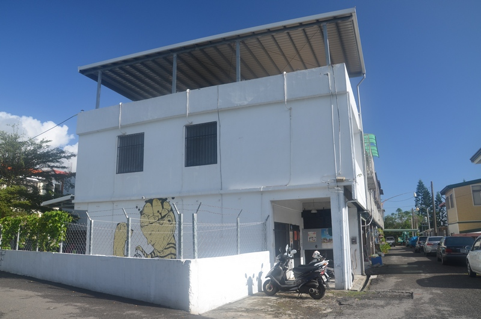
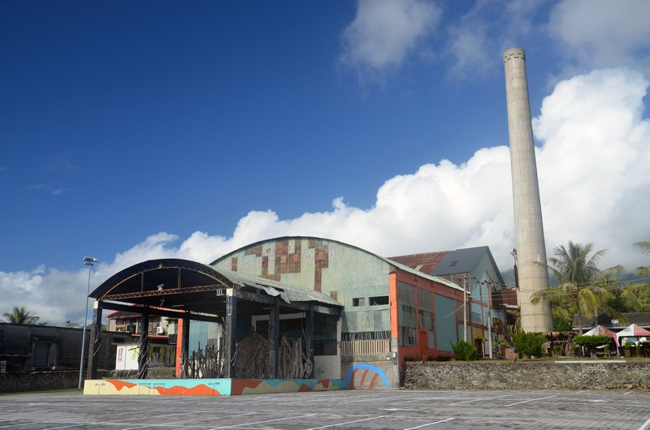
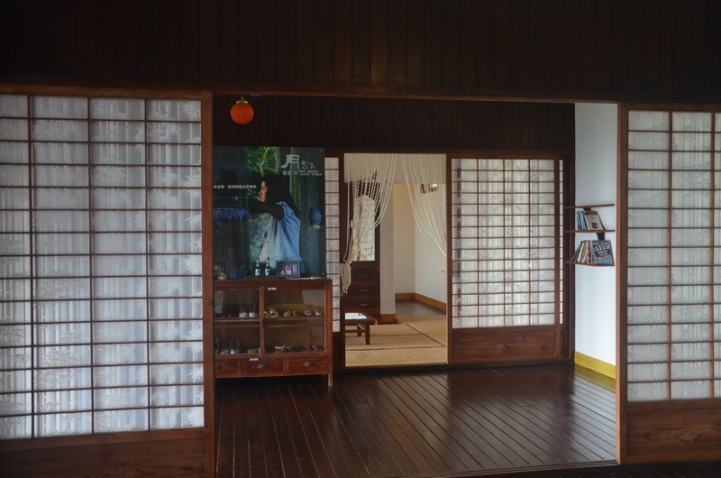
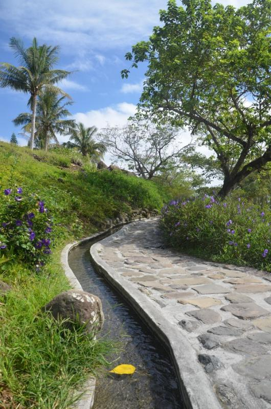
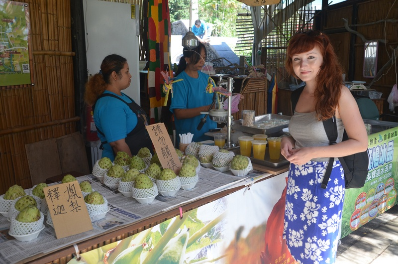
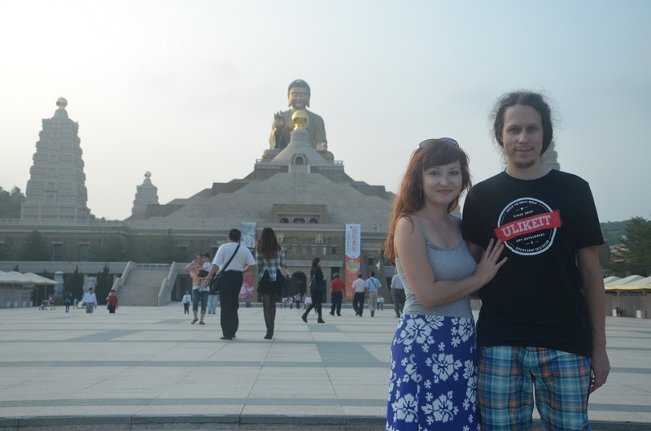
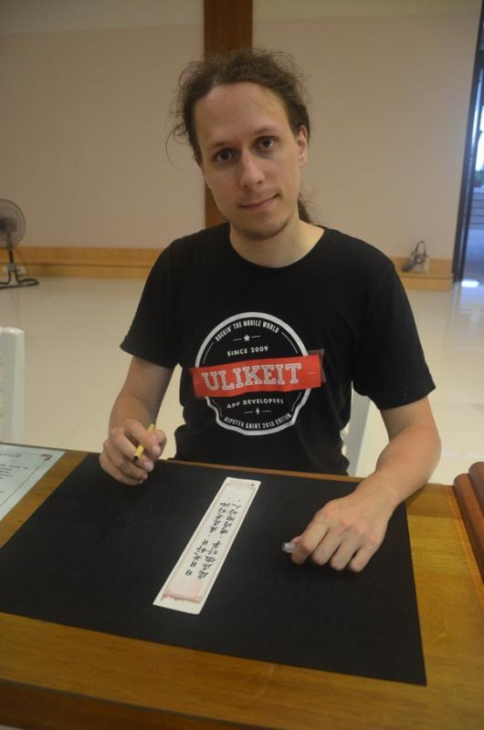
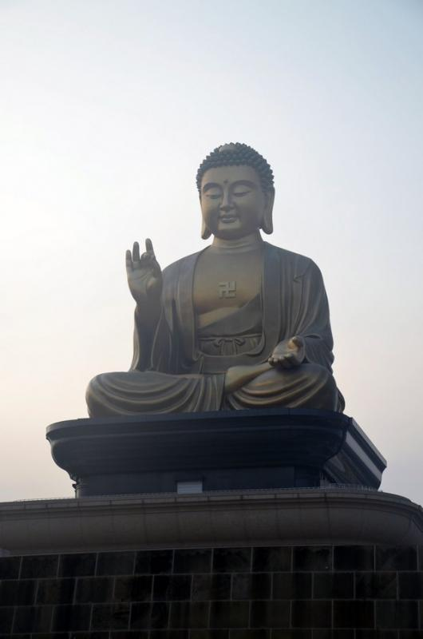
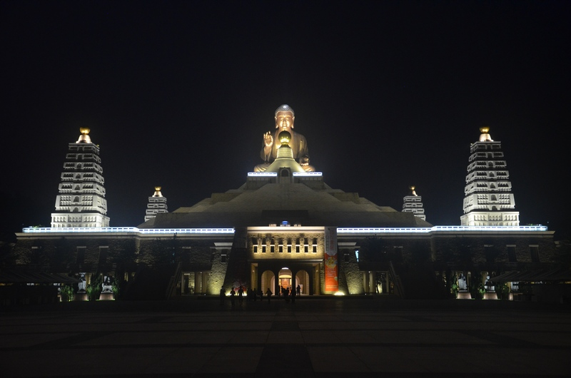
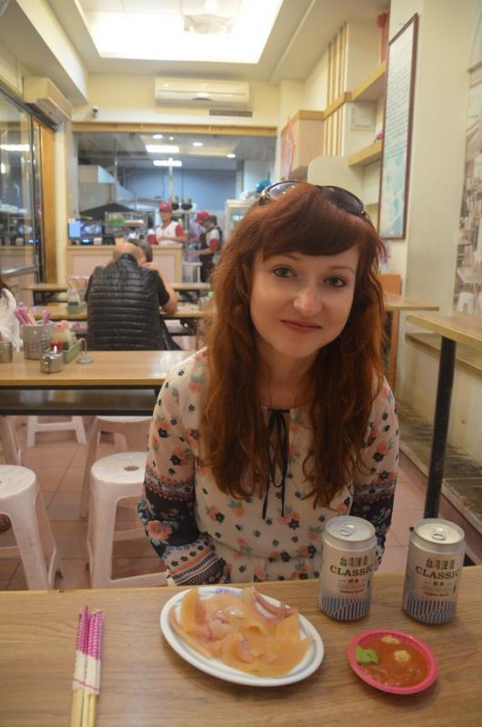

Ráno v Dulanu nás přivítalo sluncem - po nočním slejváku ani památky. Rychle jsme zabalili kufry, rozloučili se s našimi “spoluvězni” a vydali se hledat nějaké místo, kde bychom se mohli nasnídat.

Jail House hotel
Poté už jsme vyrazili směrem k Dulan Sugar Factory - budově cukrovaru, který byl kdysi plný průmyslového života a představoval zdroj příjmů pro místní lidi. Cukrovar zavřel své brány v devadesátých letech dvacátého století. Místní umělci a řemeslníci však začali brzy znovu oživovat opuštěné sklady tím, že si tu otevírali improvizovaná studia a ateliéry. Vyvinula se tak unikátní umělecké scéna, která prý získává čím dál větší věhlas. O víkendech se tu konají koncerty a další kulturní akce. Bohužel to tu začíná žít až v odpoledních hodinách, takže jsme neměli možnost vychutnat si tu pravou atmosféru. Večer už jsme potřebovali být v Tainanu, a tak jsme se nemohli v Dulanu tak dlouho zdržovat.

Dulan Sugar Factory
Navštívili jsme zde ale ještě jedno místo, tzv. Moonlight Inn - starobylé lesnické stavení z japonských dob, které leží v kopcích nad Dulanem. Konají se tu četné výstavy místních umělců a je odsud krásný výhled až k oceánu.

Moonlight Inn
Okolí Dulanu nabízí také jednu geologickou zvláštnost - vodu tekoucí vzhůru. Fakt bych tomu nevěřila, kdybych to na vlastní oči neviděla. Parkem protéká malý potůček, který v určitém úseku cesty zcela zjevně teče do kopce! Doteď se nám nepodařilo jednoznačně zjistit, čím je tento jev způsobený. Možná je mezi čtenáři nějaký fyzik, který by nám to mohl vysvětlit v komentáři :D

Fakt teče vzhůru!
Každopádně jsme si tu udělali hezkou zastávku a ochutnali zde u stánku dosud neznámý druh ovoce - sugar apple, které mi chutí trochu připomínalo sladký meloun. Posilnění jsme se vydali zase na cestu. Čekal nás teď poměrně dlouhý přejezd. Našim nejbližším cílem byl Foguangshan.

Sugar apple
Veliký chrámový komplex Foguangshan je považován za buddhistické centrum jižního Taiwanu. My jsme navštívili “pouze” Buddhovo pamětní centrum - působivý muzejní komplex, který zahrnuje 12 symetricky rozestavených pagod a obrovského Buddhu sedícího na vrcholku hlavní budovy.

Foguangshan
Je to mimořádně působivé místo. Svatyně jsou krásné a v moderním stylu - centrum bylo postaveno teprve před několika málo lety. Byli jsme nadšení z ochotného personálu, který uměl výborně anglicky a vysvětlil nám všechno, co nás zajímalo. A dokonce jsme si tu i vyzkoušeli kaligrafii!

Docela nám to šlo!
Nechali jsme si tu také vylosovat “words of wisdom” - jakousi věštbu, se kterou se často můžete setkat v buddhistických chrámech. Buddha nikdy nedává jednoznačné odpovědi, ale slova, která člověka můžou navést. Po vylosování čísla nám naše “asistentka” Judy vyhledala příslušné moudro a vysvětlila nám, jak si ho máme vyložit. A přišlo mi, že s mým “moudrem” se hodně trefila, takže na tom asi něco bude ;-)

Větší než obvykle :)
Po prohlídce svatyní jsme ještě oběhali pár všudypřítomných šopíků. Strýcovi jsem slíbila přivést z Taiwanu vonné tyčinky a tady měli přímo ty chrámové a ještě v megabalení po sto kusech :-) A opět jsme neodolali sladkým mocchi. Pak už byl ale nejvyšší čas přesunout se do Tainanu.

Foguangshan po setmění
V Tainanu jsme si nejprve našli hotel a potom hned vyrazili na večeři, protože jsme za celý den ani neměli čas se pořádně najíst. Teď jsme si to docela vynahradili. Péťa našel na TripAdvisoru tip na jednu malou restauraci, kam chodí místní. Interiér opět nic moc, ale to jídlo! Jako předkrm jsme si dali chobotnici s omáčkou a každý jednu velkou nudlovou polívku s mořskými plody, která se skoro ani nedala sníst. A navrch ještě taiwanské pivo!

Jídlo - nejlepší závěr dne :)
Následující den jsme se měli setkat s Mendy, s níž naše cesta začala nabírat hodně zajímavý směr ;-)!